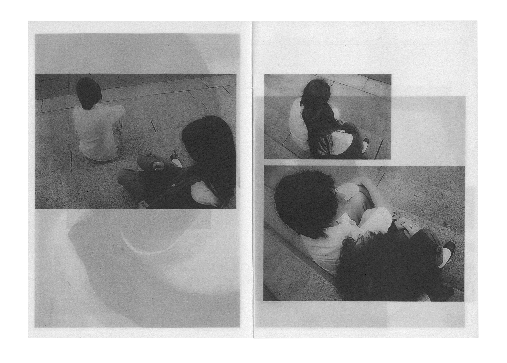
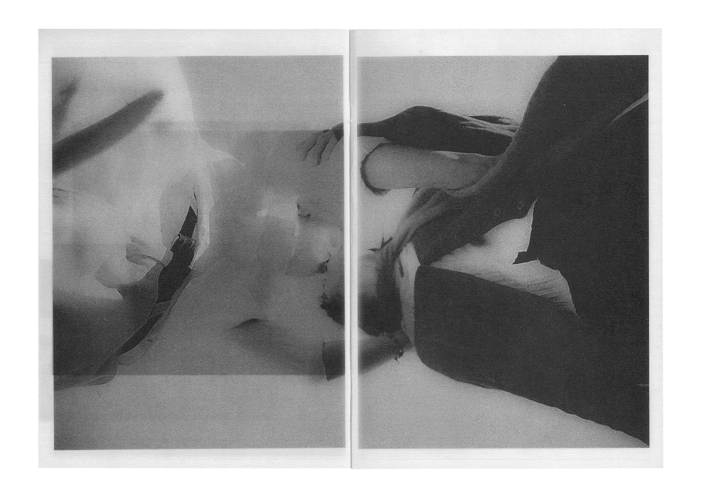
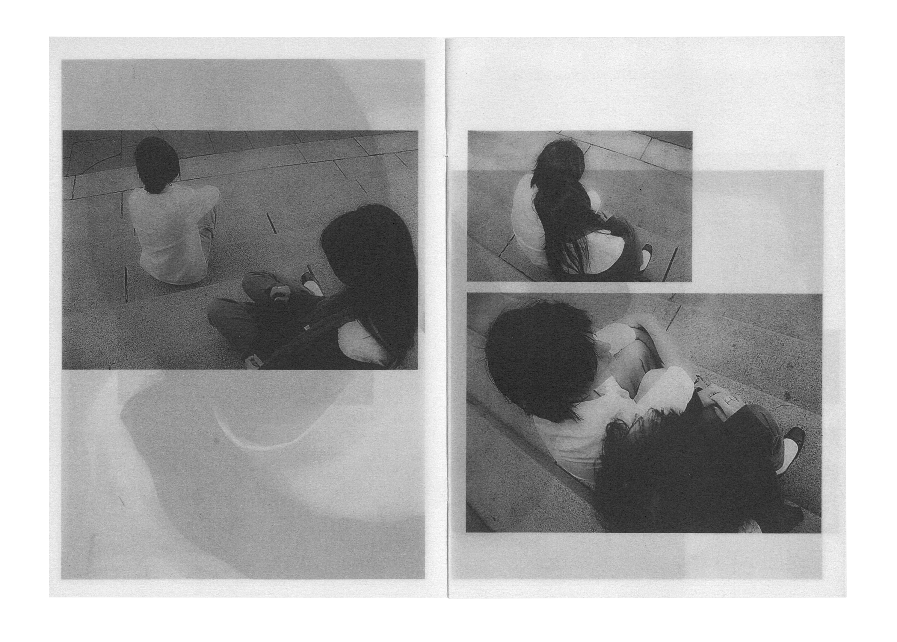
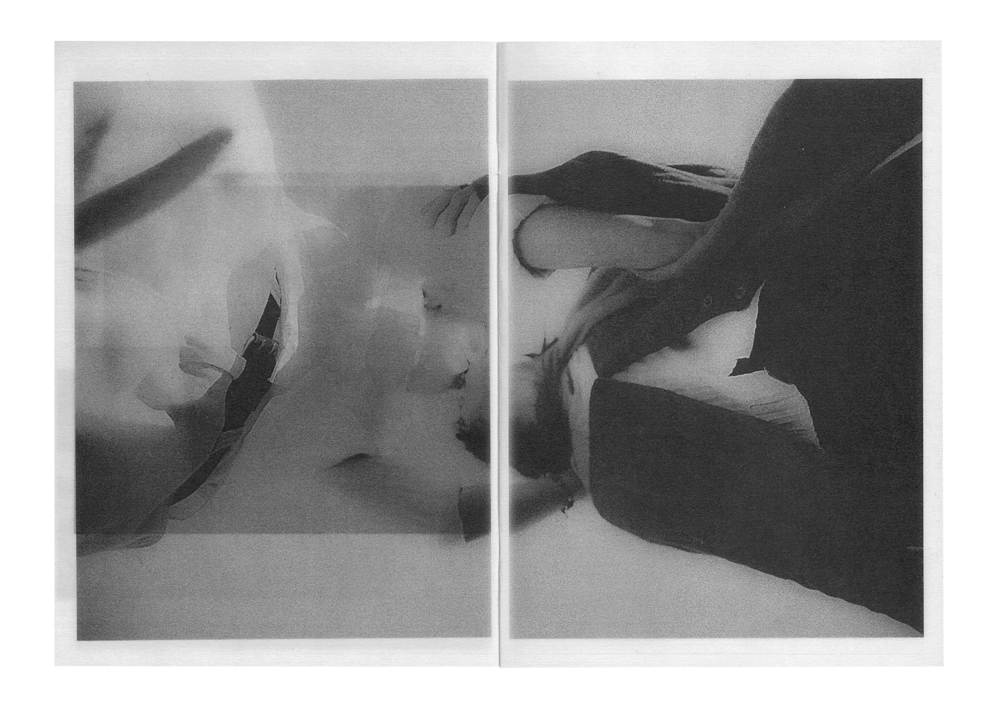

Phoebe Li Portfolio
Application for MC250
Master of Communication Design
Semester 2, 2025
CORPOREAL
Next: Caribbean Blue
Previous: Counterpart
Photography
Publication
A photobook exploring demeanour and disposition through physical form, crafted using 90gsm vellum and ink. Investigating ephemerality, moments of tenderness. What is revealed through gesture in the absence of facial expression? Transparency is leveraged to highlight how all captured moments together form a comprehensive study, parts of a bigger picture; multiple frames are visible simultaneously as all frames are interdependent.
 


